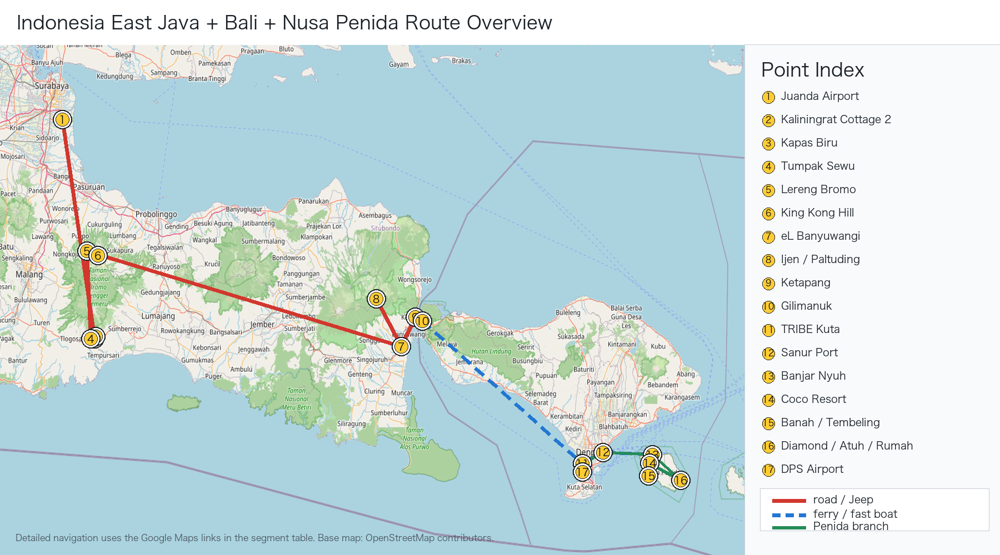

印尼东爪哇 + 佩尼达摄影行程完整增强版
生成日期：2026-06-08
原始行程：行程.md
说明：这个版本是主行程执行文档，只保留 Day 1-8 的时间、地点、交通、住宿和安全边界。摄影执行、装备清单、导游/司机话术、来源记录分别独立成文档。行程.md 已同步为同一 Penida 执行口径，避免现场误读旧路线。
一图版路线图
下面这张只保留 Java/Bali/Nusa Penida 路线、点位、交通方式和保守时间。

全程逐日时间线总表
| 日期 | 时间 | 地点 / 动作 | 执行备注 |
|---|---|---|---|
| D1 前夜 6/12 | 23:00 前后 | 深圳宝安机场 | 提前办理 SQ857，托运行李按票面 30kg/人 |
| D1 6/13 | 02:05-06:10 | 深圳 → 新加坡 | SQ857，抵达后在樟宜机场转机、吃饭、休息 |
| D1 6/13 | 06:10-13:20 | 新加坡樟宜机场 | 长转机，补睡、充电、整理入境材料 |
| D1 6/13 | 14:20-15:40 | 新加坡 → 泗水 | SQ926，抵达泗水朱安达机场 T2 |
| D1 6/13 | 16:40-17:00 | 泗水机场出关取行李、司机接机 | 联系司机和酒店，路上安排晚餐/便利店 |
| D1 6/13 | 17:00-22:00/23:00 | 泗水 → Kaliningrat Cottage 2 | 专车长转场，晚到正常 |
| D1 6/13 | 22:00-23:30 | Kaliningrat Cottage 2 入住 | 充电、装 24-105mm、雨罩/干袋放外袋 |
| D2 6/14 | 05:10-05:30 | Kaliningrat Cottage 2 起床出发 | 防滑鞋、三脚架、雨罩、CPL/ND 放外袋 |
| D2 6/14 | 05:45-06:30 | Kapas Biru Panoramic View | 只去观景台，拍 Semeru、瀑布、峡谷层次 |
| D2 6/14 | 06:30-06:55 | Kapas Biru → Tumpak Sewu | 转到 Lumajang 侧入口 |
| D2 6/14 | 07:00-07:50 | Tumpak Sewu 上方观景台 | 先拍马蹄形瀑布安全图 |
| D2 6/14 | 08:00-10:30 | Tumpak Sewu 谷底 / Goa Tetes 可选 | 只在路况、水量、天气安全时执行 |
| D2 6/14 | 10:30-12:15 | 上撤、换衣、午餐 | 12:30 是离开硬截止 |
| D2 6/14 | 12:30-17:30/18:30 | Tumpak Sewu → Lereng Bromo Hotel | 长转场，不加临时景点 |
| D2 6/14 | 19:00-21:30 | Bromo 酒店晚餐、确认 Jeep、睡觉 | 为 D3 凌晨出发留睡眠 |
| D3 6/15 | 03:15-03:20 | Lereng Bromo Hotel Jeep 接人 | 目标 King Kong Hill / Bukit Kedaluh |
| D3 6/15 | 04:00-04:15 | King Kong Hill 到位 | 占位、架三脚架，先拍蓝调/星空尾声 |
| D3 6/15 | 05:15-06:15 | Bromo 日出主拍 | 70-200mm 压缩 Bromo、Batok、Semeru |
| D3 6/15 | 06:15-07:00 | 观景台补拍 | 拍云海、人群、山脊和环境图 |
| D3 6/15 | 07:00-08:30 | 沙海 | Jeep 车辙、马队、火山灰纹理 |
| D3 6/15 | 08:30-09:00 | Pura Luhur Poten / 安全边界 | 官方限制未解除时不进 crater 1 km |
| D3 6/15 | 09:00-10:00 | 返回酒店 | 早餐、洗澡、备份照片 |
| D3 6/15 | 10:00-15:30 | 酒店休息 | 午睡，减少 D4/D5 疲劳 |
| D3 6/15 | 15:30-17:30 | 酒店附近轻拍 / 休息 | 不安排高强度项目 |
| D3 6/15 | 19:00-21:00 | 晚餐、备份、准备二刷 | D4 是否补拍按 D3 成片和天气决定 |
| D4 6/16 | 04:30-05:00 | 可选二刷 Bromo 出发 | D3 成功则换 Penanjakan 1 / Bukit Cinta；D3 失败继续 King Kong；Mentigen Hill 只作 C 级备选 |
| D4 6/16 | 05:20-06:30 | Bromo 观景台补拍 | 只补日出和火山层次，不重复沙海 |
| D4 6/16 | 06:30-08:30 | 返回酒店、早餐、退房 | 收拾行李，准备长转场 |
| D4 6/16 | 09:00-17:00/18:30 | Bromo → eL Hotel Banyuwangi | 7-9 小时专车，不加景点 |
| D4 6/16 | 19:00-21:30 | Banyuwangi 晚餐、Ijen 准备 | 头灯、防毒面具、保暖层、登山包就位 |
| D5 6/17 | 00:50-01:30 | eL Hotel 起床、出发去 Paltuding | 争取蓝火窗口需 01:15-01:30 出发 |
| D5 6/17 | 02:30-03:00 | Pos Paltuding 登山口 | 确认开放范围、面具、头灯和路线 |
| D5 6/17 | 03:00-04:45/05:00 | 徒步到 Ijen crater rim | 蓝火只作条件项目，火山湖日出优先 |
| D5 6/17 | 05:20-06:30 | Ijen 火山湖日出 | 拍火山湖、硫磺烟、山脊和矿工人文 |
| D5 6/17 | 06:30-08:30 | 下山回 Paltuding | 防滑，避免硫磺烟下风侧停留 |
| D5 6/17 | 10:00-12:00 | 回 eL Hotel 洗澡早餐、退房 | 整理湿衣物和相机 |
| D5 6/17 | 12:00-14:15 | eL Hotel → Ketapang → Gilimanuk | 渡轮后切换 WITA，巴厘岛时间 +1 小时 |
| D5 6/17 | 15:15-18:30/20:30 | Gilimanuk → TRIBE Bali Kuta Beach | 长车程，抵达后只整理 Penida 装备 |
| D6 6/18 | 06:30-07:00 | TRIBE Kuta 出发去 Sanur | 08:30 船需留 check-in 和堵车余量 |
| D6 6/18 | 08:30-09:15 | Sanur → Nusa Penida | 快船，按船司确认到达港 |
| D6 6/18 | 10:00-12:30 | 上午浮潜 2-3 点 | 早上海况和能见度通常更稳；点位听船家 |
| D6 6/18 | 12:30-13:15 | 冲洗 / 午餐 | 简化补水，尽快切回陆地段 |
| D6 6/18 | 13:30-14:05 | Angel's Billabong | 低潮浪小时快速拍潮池；浪大只看不下湿岩 |
| D6 6/18 | 14:05-14:35 | Broken Beach | 与 Angel 同组，拍天然拱和圆形海湾 |
| D6 6/18 | 14:35-15:15 | 前往 Kelingking Beach | 路况慢就直接砍 Banah |
| D6 6/18 | 15:15-16:05 | Kelingking Beach / Viewpoint / 可下上段拍沙滩视角 | 默认不下到底部；若完整下沙滩，当天改成 Kelingking 单点深拍 |
| D6 6/18 | 16:05-16:25 | Paluang Cliff 白天景色 + 日落踩点 | Kelingking 同组侧面机位，先拍白天侧面，预判傍晚是否切这里 |
| D6 6/18 | 16:25-17:20 | Banah Cliff Point 快速拍照 | 仅路干、司机确认、能 17:30 前回 Kelingking 时执行 |
| D6 6/18 | 17:30-18:10 | 回 Kelingking Beach 拍日落 | D6 主片；日落约 18:07 WITA |
| D6 6/18 | 18:30-22:00 | Coco Resort Penida 入住、晚餐、休息 | 若天气极好可酒店附近安全空地试拍银河 |
| D7 6/19 | 05:30-05:45 | Coco Resort 出发去东线 | 东线远，早出发避开日返人流 |
| D7 6/19 | 07:15-08:30 | Diamond Beach 高位 | 拍白崖、海蚀岩、台阶和浪线，不高体力下切 |
| D7 6/19 | 08:45-09:45 | Atuh Beach 高位 | 长焦等浪线和海蚀拱岩 |
| D7 6/19 | 10:00-11:30 | Rumah Pohon / Thousand Islands | 拍树屋、Raja Lima、Thousand Islands 背景 |
| D7 6/19 | 11:30-13:00 | 午餐 / 东线机动 | 若前面拥堵，用午餐压缩机动时间 |
| D7 6/19 | 13:00-15:00 | 回港路上机动 | 西线不重复；除非东线取消，否则不再补 Broken / Angel / Kelingking |
| D7 6/19 | 15:30 | Nusa Penida 港口 check-in | 覆盖 16:30 回程船 |
| D7 6/19 | 16:30-17:15 | Nusa Penida → Sanur | 回 Bali 后专车去 Kuta |
| D7 6/19 | 18:30-20:00 | TRIBE Bali Kuta Beach | 洗澡、备份、整理返程行李 |
| D8 6/20 | 07:30-09:00 | Kuta 酒店周边可选轻拍 | 只在自然醒且行李完成时执行 |
| D8 6/20 | 09:00-10:00 | 酒店退房、去 DPS 机场 | 10:00 到机场保守执行 |
| D8 6/20 | 13:20-16:20 | DPS → 吉隆坡 | 亚航，电池和充电宝随身 |
| D8 6/20 | 16:20-21:45 | 吉隆坡中转 | 吃饭、补水、检查登机口 |
| D8 6/20 | 21:45-01:55+1 | 吉隆坡 → 深圳 | 抵达后优先取行李和备份照片 |
全程执行硬规则
1. D3 Bromo Jeep 建议 03:15-03:20 接，04:00-04:15 到 King Kong / Bukit Kedaluh。
2. D3 Bromo 当前按 TNBTS 官方限制处理：不进入 crater 1 km，最多到 Pura Luhur Poten；出发前确认线上票和 QR。
3. D5 Ijen 如果争取蓝火，建议 01:15-01:30 从 eL Hotel 出发；03:30 起走更像火山湖日出版。
4. D5 Ketapang-Gilimanuk 必须写清 WIB/WITA 时差，不能只写一个时间。
5. D6 Kuta 去 Sanur 码头建议 06:45-07:00 出发，留 check-in 和拥堵余量。
6. D6 按我们的摄影优先级协调旅行社：上午先浮潜；下午按 Angel's Billabong → Broken Beach → Kelingking Beach → Paluang Cliff 白天景色/日落踩点 → Banah Cliff Point → 回 Kelingking Beach 日落执行。Paluang 很近，Banah 只在路况和返程时间允许时去。
7. D7 Coco Resort 去东线很远，建议 05:30-05:45 出发，不做 Diamond Beach 高体力下切。
8. Mentigen Hill 只作 Bromo C 级救场备选，不替代 D3 King Kong 或 D4 Penanjakan / Bukit Cinta。独立文档入口
- 摄影执行：摄影手册_独立版.md
- 天象专项：天象专项_银河日出日落月相.md
- 装备勾选：装备Checklist.md
- 导游/司机/船家话术：导游沟通Checklist.md
- 来源记录：行程核验与摄影机位大片参考.md
每日执行版
印尼东爪哇 + 佩尼达摄影行程执行版
行程概览
日期： 6 月 13 日 – 6 月 20 日 路线： 深圳 → 新加坡 → 泗水 → Pronojiwo → Bromo → Banyuwangi / Ijen → 巴厘岛 Kuta → Nusa Penida → Kuta → 深圳 主题： 火山、瀑布、火山湖、佩尼达海岛 重点： Sewu / Kapas Biru、Bromo 双日出、Ijen 火山湖、Penida 浮潜与东线
核心原则
1. D2 Kapas Biru 必须写成 Kapas Biru Panoramic View。
2. D3 Bromo 主拍机位优先 King Kong Hill / Bukit Kingkong。
3. D4 Bromo 二次拍摄不重复火山口。
4. D5 Ijen 以火山湖日出为主，蓝火视开放情况。
5. D6 让旅行社配合我们的节奏：上午浮潜；下午 Angel / Broken，Kelingking 可拍上段沙滩视角，Paluang 补白天侧面并踩日落点，Banah 条件快拍，最后回 Kelingking 日落。
6. D7 Penida 东线拍高位机位，不做高体力下切。
7. D8 回国日不加景点。Day 1｜6 月 13 日｜深圳 → 新加坡 → 泗水 → Pronojiwo
今日定位
性质：长途转场日
核心任务：抵达 Kaliningrat Cottage 2
拍摄任务：无
重点：安全到酒店、吃饭、充电、休息航班
深圳 → 新加坡
航班：SQ857
起飞：02:05 深圳宝安国际机场
到达：06:10 新加坡樟宜机场
机型：Boeing 737 MAX 8
飞行时间：4小时05分
行李：免费托运行李 30kg/人新加坡 → 泗水
航班：SQ926
起飞：14:20 新加坡樟宜机场 T2
到达：15:40 泗水朱安达机场 T2
机型：Boeing 737 MAX 8
飞行时间：2小时20分当天时间轴
23:00 前后 抵达深圳宝安机场
02:05 深圳 → 新加坡 SQ857
06:10 抵达新加坡
06:10–13:20 樟宜机场转机、吃饭、休息
14:20 新加坡 → 泗水 SQ926
15:40 抵达泗水
16:40–17:00 出机场，司机接机
17:00–22:00/23:00 专车前往 Kaliningrat Cottage 2
22:00–23:00 入住
23:30 前后 休息住宿
酒店：KALININGRAT COTTAGE 2
地址：Jl. Raya Besuk, Cukit, Sidomulyo, Pronojiwo, Lumajang Regency, East Java 67374晚上准备
相机电池充满
手机和充电宝充满
镜头提前装好 24-105mm
防水袋、雨罩、镜头布放进包
准备第二天防滑鞋
早点睡Day 2｜6 月 14 日｜Kapas Biru Panoramic View + Tumpak Sewu → Bromo
今日定位
性质：瀑布峡谷 + 长途转场
出发地：Kaliningrat Cottage 2
终点：Lereng Bromo Hotel
核心拍摄：
- Kapas Biru Panoramic View
- Tumpak Sewu 上方观景台
- Tumpak Sewu 谷底，视天气和水量当天时间轴
05:10 起床
05:30 Kaliningrat Cottage 2 出发
05:45 Kapas Biru Panoramic View
05:45–06:30 拍 Semeru + Kapas Biru + 峡谷
06:30 离开
06:55 Tumpak Sewu 上方观景台
07:00–07:50 拍上方瀑布全景
08:00–10:30 视情况进入谷底
10:30–11:15 上撤、换衣服、整理器材
11:30–12:15 午餐
12:30 前往 Bromo
17:30–18:30 抵达 Lereng Bromo Hotel
19:00 晚餐
20:00 确认第二天 Jeep 和观景台
21:30 睡觉第一站：Kapas Biru Panoramic View
拍摄内容
Semeru 火山背景
Kapas Biru 瀑布
绿色峡谷
清晨山谷层次镜头建议
24-105mm：主力
70-200mm：压缩 Semeru + 瀑布
14-24mm：有前景时使用现场判断
Semeru 清楚：拍 40–45 分钟
Semeru 被云挡：拍 15–20 分钟后转 Tumpak Sewu
下雨：快速拍几张，转 Tumpak Sewu 上方观景台第二站：Tumpak Sewu 上方观景台
拍摄内容
半圆形瀑布幕布
峡谷纵深
瀑布水雾
瀑布全景结构镜头建议
14-24mm：全景
24-105mm：主力
70-200mm：局部水流第三站：Tumpak Sewu 谷底
是否下谷底
适合下去：
没下雨
水量正常
路面可走
向导判断安全
体力状态可以不建议下去：
下雨
水量大
路滑
相机防水没准备好
身体疲劳拍摄内容
巨型水幕
人物和瀑布比例
水雾中的峡谷
湿润岩壁
瀑布包围感住宿
酒店：布罗莫乐仁酒店 / Lereng Bromo Hotel
区域：Tosari / Wonokitri 方向睡前确认
Jeep 几点接
D3 观景台是否为 King Kong Hill
从酒店到观景台多久
是否含 Bromo 门票 / 线上预约 QR
确认 TNBTS 当天是否仍限制进入 Bromo crater 1 km
是否准备早餐盒Day 3｜6 月 15 日｜Bromo 主拍日
今日定位
性质：Bromo 主拍日
核心机位：King Kong Hill / Bukit Kingkong
拍摄内容：
- Bromo
- Batok
- Semeru
- 云海
- 烟柱
- 沙海
- 马队
- 寺庙
- 火山口方向，按 TNBTS 当天限制执行主机位
D3 主拍机位：
King Kong Hill / Bukit Kingkong / Bukit Kedaluh备选机位
Penanjakan 1
Bukit Cinta
Mentigen Hill，C 级备选，只在 Jeep/路况/拥堵异常或司机判断低位开窗更好时使用
Bukit Prau View，需旅行社提供地图和实拍图机位选择逻辑
D3 主拍：King Kong Hill
D4 如果 D3 成功：可换 Penanjakan / Bukit Cinta
D4 如果 D3 天气失败：继续 King Kong Hill
Mentigen Hill 不替代 King Kong；只作轻量、低位、救场备选Mentigen Hill 取舍
定位：C 级备选，不是主计划。
适合：Jeep 高位观景台严重拥堵、道路临时受限、司机明确判断低位云雾开窗更好，或临时改住 Cemoro Lawang 时步行轻拍。
不适合：D3 主片；D4 已有清晰高位补拍机会；为了“多打卡一个点”压缩 Banyuwangi 转场。
执行：如果启用，只拍日出前后 30-45 分钟，06:30 下撤，08:30 前回酒店整理行李。
器材：24-105mm + 70-200mm 即可，14-24mm 只拍环境；不用 ND。当天时间轴
03:10 起床
03:15–03:20 Jeep 酒店接
04:00–04:15 抵达 King Kong Hill
04:30–05:15 蓝调、火山轮廓、烟柱
05:15–05:45 日出前后主拍
05:45–06:30 晨光、云海、长焦细节
06:30 Jeep 下山
07:00–07:40 沙海、马队、车辙
07:40–08:00 Pura Luhur Poten 寺庙
08:00–08:30 Pura Luhur Poten / 火山口方向安全边界，按 TNBTS 当天限制执行
09:00–09:30 回酒店
09:30–14:30 早餐、洗澡、睡觉、备份照片
15:30–17:00 可选轻拍 / 休息
18:00 晚餐
21:30 睡觉King Kong Hill 拍什么
Bromo 火山口烟柱
Batok 圆锥火山
远处 Semeru
晨雾和云海
火山层次
沙海暗纹镜头建议
70-200mm：主力
24-105mm：补完整关系
14-24mm：云海很大时使用拍法
先用 70-200mm 拍火山压缩关系
不要一上来就用超广角
烟柱要留出飘动方向
Semeru 作为远景压轴
云海作为中景层次沙海拍摄
拍摄内容
Jeep 车辙
火山灰纹理
马队
远处 Bromo 烟柱
人在沙海里的尺度感镜头
14-24mm：低机位车辙
24-105mm：环境
70-200mm：马队和烟柱Pura Luhur Poten 寺庙
拍寺庙屋顶线条
拍寺庙和火山背景
停留 15–20 分钟即可火山口方向 / 官方限制
当前 TNBTS 官方提示：不要进入 Bromo 火山口 1 km 范围，最多到 Pura Luhur Poten。
因此火山口方向不是刚性项目。
如果限制未解除：只拍 Pura Luhur Poten、沙海、远处烟柱，不走 crater 阶梯和口沿。
如果现场官方/向导确认允许：只做短时间体验，风大灰大，不频繁换镜，不靠近无护栏边缘。Day 4｜6 月 16 日｜Bromo 二次补拍 → Banyuwangi
今日定位
性质：Bromo 补拍 + 长途转场
出发地：Lereng Bromo Hotel
终点：El Hotel Banyuwangi
重点：观景台火山层次
不做：火山口、沙海、寺庙重复游览机位策略
如果 D3 天气好
D4 可换：
Penanjakan 1
Bukit Cinta
Mentigen Hill，只有 Jeep/路况/拥堵异常或司机判断低位开窗更好时启用
Bukit Prau View，需提前确认如果 D3 天气差
D4 继续：
King Kong Hill / Bukit Kingkong
除非司机明确判断 Mentigen 低位云雾开窗更好，否则不换 Mentigen当天时间轴
03:20 起床
03:40 Jeep 酒店接
04:20–04:40 到观景台
04:40–05:20 蓝调、火山轮廓、烟柱
05:20–06:00 主光线窗口
06:00–06:30 长焦细节、云海、Semeru
06:30 返回酒店
07:30 早餐、洗澡
08:30 整理行李
09:00 退房，前往 Banyuwangi
12:00 路上午餐
15:00 中途休息
17:00–18:00 抵达 El Hotel Banyuwangi
18:30 晚餐
19:30 整理 Ijen 装备
20:30 睡觉D4 拍摄重点
火山剪影
烟柱
云海暗部层次
Bromo + Batok + Semeru
火山脊线
沙海纹理
晨光边缘镜头建议
70-200mm：主力
24-105mm：备用
14-24mm：基本不用旅行社执行要求
D4 不重复火山口。
D4 只做观景台补拍。
拍完回酒店早餐。
09:00 左右退房去 Banyuwangi。
当天不要加沙海、火山口或其他景点。Day 5｜6 月 17 日｜Ijen 火山 → 巴厘岛 Kuta
今日定位
性质：夜爬 + 跨海长转场
出发地：El Hotel Banyuwangi
拍摄地：Ijen / Kawah Ijen
终点：TRIBE Bali Kuta Beach
核心拍摄：火山湖日出 + 硫磺烟
蓝火：视当天开放情况推荐执行版本
不强求蓝火。
以火山湖日出为主。
如果向导确认 blue fire area 开放，可提前出发。当天时间轴
00:50 起床
01:15–01:30 El Hotel Banyuwangi 出发
02:30–03:00 到 Paltuding 登山口，确认开放范围和防毒面具
03:00 开始徒步
04:45–05:00 到火山口边缘
05:20–06:30 拍火山湖日出、硫磺烟、山脊
06:30 下山
08:30 回到登山口
10:00 回 El Hotel，洗澡早餐
12:00 退房，去 Ketapang 港
13:15 上船 / 等船
14:15 抵达 Gilimanuk，切换巴厘岛时间 +1 小时
15:15 巴厘岛时间出发去 Kuta
18:30–20:30 抵达 TRIBE Bali Kuta Beach
21:00 洗澡、整理 Penida 装备
22:30 睡觉术语说明
crater rim：火山口边缘
crater floor：火山口底部
blue fire area：蓝火区域Ijen 拍摄内容
蓝绿色酸性火山湖
硫磺烟
火山口弧线
山脊人物剪影
矿工和硫磺区域
日出后的冷暖反差镜头建议
24-105mm：主力
70-200mm：硫磺烟、矿工、湖面局部
14-24mm：谨慎使用装备
头灯
防毒面具，N95 仅作防尘备用
防风外套
抓绒或薄羽绒
手套
登山鞋
水
能量棒
相机雨罩
备用电池不要做
不要强行保证蓝火
不要 Ijen 后加魔戒森林
不要跨海后再加巴厘岛景点
不要晚上到 Kuta 后再出去逛太久Day 6｜6 月 18 日｜Kuta → Nusa Penida｜上午浮潜 + 西线快拍 + Paluang 踩点 + Kelingking 日落 + 住岛
今日定位
性质：上岛 + 上午浮潜 + 西线快拍 + Paluang 踩点 + Kelingking 日落
出发地：TRIBE Bali Kuta Beach
终点：Coco Resort Penida
核心项目：让旅行社按我们的摄影优先级调度
摄影目标：浮潜纪录、Angel / Broken 地貌、Kelingking 沙滩俯拍、Paluang 侧面机位、Banah 快速补拍、Kelingking 日落当天时间轴
06:30 起床
06:45–07:00 TRIBE Kuta 出发
07:30–08:00 到 Sanur 码头
08:30–09:00 快船去 Nusa Penida
09:30–10:00 抵达 Penida，司机接
10:00–12:30 上午浮潜 2-3 点，按海况调整
12:30–13:15 冲洗 / 午餐
13:30–14:05 Angel's Billabong 快速拍潮池
14:05–14:35 Broken Beach 拍天然拱和圆形海湾
14:35–15:15 前往 Kelingking Beach
15:15–16:05 Kelingking Beach / Viewpoint / 可下上段拍沙滩视角
16:05–16:25 Paluang Cliff 白天景色 + 日落踩点，也是 Kelingking 同组候选机位
16:25–17:20 Banah Cliff Point 快速拍照，仅路干且司机确认时执行
17:30–18:10 回 Kelingking Beach 拍日落 / 金色光
18:30 前往 Coco Resort Penida
19:00 入住 / 冲洗 / 晚餐
20:00 晚餐
21:30 睡觉浮潜常见点
Manta Bay / Crystal Bay / Gamat Bay
Wall Bay / Wall Point
SD Point / Mangrove Point
其他点位按船家根据浪、流、能见度调整浮潜注意
听船家安排
不会游泳也要穿救生衣
不追鱼群离船太远
水下拍摄用运动相机
主相机不要带下水
浮潜后冲淡水当天取舍
上午先浮潜，利用相对更稳的早上海况；点位听船家调，不指定硬点
14:00 前必须结束浮潜并切回陆地段；如果浮潜拖延，砍 Angel / Broken 或 Banah，不砍 Kelingking 日落
下午顺序按 Angel's Billabong → Broken Beach → Kelingking Beach → Paluang Cliff 白天景色/日落踩点 → Banah Cliff Point → 回 Kelingking Beach 日落执行
Kelingking 可以下到上段安全台阶拍沙滩视角；如果决定完整下到底部沙滩，当天自动改成 Kelingking 单点深拍，放弃 Paluang / Banah / 回拍日落
Paluang Cliff 与 Kelingking 同组，下午先拍白天侧面并踩日落点；最终优先回 Kelingking Beach 日落，若 Kelingking 人流/光位不理想再切 Paluang
Banah Cliff Point 只作路况好时的快速拍照支线；16:15 前司机判断，17:30 前回不到 Kelingking 就砍
Crystal / Tembeling 不作为 D6 主计划，只在 Kelingking 日落取消且司机确认安全时考虑镜头建议
24-105mm：主力
14-24mm：海崖大景
70-200mm：可带，但浮潜时不要随身上小船
运动相机：浮潜用下午点位执行参数
| 点位 | 当天取舍 | 站位与画面 | 参数与手法 | 注意事项 |
|---|---|---|---|---|
| 浮潜：Manta / Crystal / Gamat / Wall / SD / Mangrove 机动 | 上午主项目，点位听船家按浪、流、能见度调整；不为 Manta 硬冲远点。 | 清水、珊瑚、鱼群、人物和水面光束；若遇到 manta 当作加分，不当作承诺。 | 运动相机 4K/60，广角，防抖开，-0.3 到 -0.7EV；主相机只在船上用 70-200 或 24-105，1/1000，f/5.6-f/8，ISO100-800。 | 14:00 前必须结束；主相机不上小船裸放，不下水；救生衣和脚蹼优先；不碰珊瑚。 |
| Angel's Billabong | 下午第一站，低潮浪小时快速拍。 | 潮池、岩面纹理、浪花和海面层次。 | 14-24 拍地貌，24-105 收窄避人；f/8-f/11，ISO100，1/250-1/800。 | 高潮/大浪直接只在上方看；不下湿黑岩，不靠浪区。 |
| Broken Beach | Angel 后顺路补拍，不恋战。 | 圆形塌陷海湾、天然拱、浪线。 | 14-24 拍完整地貌，24-105 压缩天然拱；f/8-f/11，ISO100，1/250-1/800。 | 14:35 左右收尾更稳；人多就抓局部，别为等空景拖延。 |
| Kelingking Beach / Viewpoint / 上段台阶 | D6 主片之一，可以拍到沙滩视角。 | T-Rex 崖线、白沙滩、浪线、人物剪影；默认观景台和上段安全台阶。 | 24-105 主力；70-200 抓浪线和崖壁纹理；f/5.6-f/8，ISO100-400，1/250-1/1000；逆光 AEB ±2EV。 | 可下上段拍沙滩视角；若完整下到底部沙滩，自动改成 Kelingking 单点深拍，取消 Paluang / Banah / 回拍日落。 |
| Paluang Cliff | Kelingking 旁边的侧面机位，下午先拍白天景色并踩日落点。 | T-Rex 海崖侧面、车形/寺庙视角、人物与崖线比例。 | 24-105 主力，70-200 补局部；f/5.6-f/8，ISO100-400，1/250-1/1000。 | 10-20 分钟快速补视角；最终优先回 Kelingking Beach 日落，若 Kelingking 人流/光位不理想再切 Paluang；不靠无护栏边缘。 |
| Banah Cliff Point | 更南边的补拍点，只作路况好时的快速支线。 | 海蚀柱、海崖、远处海面层次；拍 10-15 分钟即可。 | 24-105 即可，70-200 可压缩海蚀柱；f/5.6-f/8，ISO100-400。 | 16:15 前决定是否去；17:30 前回不到 Kelingking 就砍；雨后、司机说路烂、天快黑都不去。 |
| 回 Kelingking Beach 日落 | D6 最后主片。 | 金色光下的 T-Rex 崖线、白沙滩、浪线、人物剪影。 | 24-105 主力；70-200 抓海面纹理；日落逆光 AEB ±2EV。 | 17:30 前必须回到 Kelingking；如果 Banah 耽误，直接取消 Banah，不取消日落。 |
| 取消 Kelingking 日落时的后备点 | 不作为 D6 主计划。 | 只有旅行社临时取消 Kelingking 日落、司机确认 Crystal / Tembeling 安全可达时才考虑。 | 24-105 即可，轻拍收尾。 | 不为了后备点打乱 D7 东线；天黑后不走野路。 |
6/18 晚银河备选
不作为刚性安排。
只有晚饭后肉眼能看到大量星星、司机确认安全、且不影响 D7 05:30 出发，才在酒店附近安全空地试拍。
Kelingking / 西线海崖是偏西向日落画面，6/18 20:30-23:30 的银河中心在东南到南方，不适合强行当主银河海景。参数：14-24mm，14-18mm，最大光圈，ISO3200-6400，10-15s，RAW，手动对焦星点，WB 3600-4200K。海边湿气重，镜头布、干燥包、防潮袋放外袋；云多、路湿、风大或司机不建议，直接取消。
Day 7｜6 月 19 日｜Nusa Penida 东线 → 回 Kuta
今日定位
性质：Penida 东线 + 回巴厘岛
出发地：Coco Resort Penida
拍摄区域：Diamond Beach、Atuh Beach、树屋
终点：TRIBE Bali Kuta Beach推荐版本
东线早光版
不极限追日出
不做高体力下切
下午稳稳回巴厘岛当天时间轴
05:15 起床
05:30–05:45 Coco Resort Penida 出发
07:15–07:30 Diamond Beach
07:30–09:00 拍白崖、岩柱、阶梯、海湾
09:15 Atuh Beach
09:15–10:15 拍岩柱、海湾弧线、浪线
10:30 Rumah Pohon / Thousand Islands Viewpoint
10:30–11:30 拍树屋、悬崖、海上岩柱
12:00 午餐
13:00–15:30 回港口 / 机动轻拍
15:30 到码头
16:30 Nusa Penida → Sanur
17:15–17:30 到 Sanur
17:30–19:00 Sanur → TRIBE Kuta
19:30 晚餐
21:30 办理亚航线上值机，整理回国行李
22:30 休息东线逐点执行参数
| 点位 | 时间 | 站位 | 主画面 | 参数与手法 | 放弃/切换条件 |
|---|---|---|---|---|---|
| Diamond Beach 崖顶 | 07:15-07:45 | 到达后先去崖顶/Jogglo 一侧，不急下楼梯。 | 白崖、钻石岩柱、蓝绿色海水、完整海湾。 | 14-24 拍大空间，18-22mm 减少边缘变形；f/8-f/11，ISO100，1/250-1/800。高光海面 -0.3EV，必要时 AEB。 | 人太多就先拍长焦岩柱局部；云厚水色灰，就等 10-15 分钟看云缝光。 |
| Diamond Beach 楼梯中段 | 07:45-08:30 | 只下到安全中段，回头拍楼梯引导线和人。 | 白色石阶、人物尺度、海湾背景。 | 14-24 在 14-18mm，人物放画面中部，f/8，1/500 以上；24-105 在 35-70mm 拍干净人像。 | 阶梯湿滑、排队严重、浪大或体力下降，不继续下沙滩。 |
| Atuh Beach 高位 | 09:15-10:15 | 从 Diamond / Atuh 共用停车区走高位观景线，用草坡或台阶作前景。 | 弧形海湾、离岸岩柱、拱洞、浪线。 | 70-200 在 100-200mm 等浪线进入岩洞；24-105 拍完整海湾；f/8，ISO100，1/250-1/1000。可横向接片。 | 光线太硬时拍长焦浪线/岩柱，不下沙滩消耗体力。 |
| Rumah Pohon / Thousand Islands | 10:30-11:30 | 下楼梯到半路小观景点，站步道右侧小山坡，树屋放左/中景，岩柱放背景。 | 树屋、Raja Lima 岩柱、人物和悬崖比例。 | 24-105 在 35-70mm 控制树屋比例；14-24 拍环境；70-200 抓远处岩柱层次。日出后 f/8，ISO100，1/125-1/500。 | 排队超过 20 分钟就放弃同款照，转 Thousand Islands Viewpoint；背包不要外挂三脚架。 |
| 东线机动轻拍 | 13:00-15:30 | 回港路上只选司机顺路、停车方便、安全的点。 | 海岸线、村路、人文、小船。 | 24-105 挂机，f/5.6-f/8，Auto ISO，1/250 以上；不再展开三脚架。 | 15:30 必须到港口 check-in，任何加点都不能影响 16:30 船。 |
Diamond Beach 拍摄
拍摄内容
白色海崖
钻石形岩柱
蓝绿色海水
悬崖阶梯
海浪线条
人物尺度机位
上方观景点
阶梯中段
长焦岩柱局部镜头
14-24mm
24-105mm
70-200mmAtuh Beach 拍摄
拍摄内容
海湾弧线
离岸岩柱
浪线
悬崖包围感
早上侧光机位
Atuh 上方观景点
Atuh 侧面高点Rumah Pohon / Thousand Islands Viewpoint
拍摄内容
树屋和悬崖
海上岩柱
海湾层次
人物和悬崖比例不建议
不要下 Diamond Beach 沙滩后再下 Atuh 沙滩
不要在树屋排队太久
不要临时加西线
不要坐太晚的非正规船Day 8｜6 月 20 日｜Kuta → 巴厘岛机场 → 吉隆坡 → 深圳
今日定位
性质：回程日
出发地：TRIBE Bali Kuta Beach
机场：伍拉赖机场 / DPS
中转：吉隆坡 T2 / KLIA2
终点：深圳宝安 T3航班
巴厘岛 → 吉隆坡
航班：AK365
起飞：13:00 伍拉赖机场 I
到达：16:05 吉隆坡国际机场 T2
机型：Airbus A321
飞行时间：3小时05分
餐食：无吉隆坡 → 深圳
航班：AK128
起飞：22:05 吉隆坡国际机场 T2
到达：02:15+1 深圳宝安机场 T3
机型：Airbus A320
飞行时间：4小时10分
餐食：无当天时间轴
07:30 起床
07:45 早餐
08:15 整理行李
08:30 退房
09:00 TRIBE Kuta 出发去机场
09:30–10:00 到达 DPS 机场
10:00–11:15 托运行李、安检、出境
11:15–12:30 候机、午餐
13:00 AK365 巴厘岛 → 吉隆坡
16:05 抵达吉隆坡 T2
16:05–21:15 转机、吃饭、休息、确认登机口
22:05 AK128 吉隆坡 → 深圳
02:15+1 抵达深圳宝安 T3亚航提醒
提前线上值机
保存电子登机牌
能打印就打印一份
确认托运行李额度
确认行李是否直挂深圳行李检查
护照
电子登机牌
机票订单截图
托运行李额度截图
充电宝随身
相机电池随身
液体超过 100ml 托运
三脚架建议托运
相机、镜头、硬盘随身不要做
不要早上临时去景点
不要卡点去机场
不要忘记亚航线上值机
不要把充电宝和相机电池托运
不要在吉隆坡转机时出市区全程住宿
6/13 KALININGRAT COTTAGE 2
6/14 布罗莫乐仁酒店
6/15 布罗莫乐仁酒店
6/16 外南梦 El Hotel
6/17 TRIBE Bali Kuta Beach
6/18 Coco Resort Penida
6/19 TRIBE Bali Kuta Beach全程关键确认清单
装备 Checklist 已独立成文档
主攻略太长，装备采购和每日随身清单已经摘出为独立文档。
网页上可直接打勾，勾选状态保存在当前浏览器本地。- 独立 Markdown：装备Checklist.md
- 网站独立页面：装备Checklist
每日导游/司机沟通 Checklist 已独立成文档
每日跟司机、向导、船家沟通的中英文话术已经摘出为独立文档。
网页上可直接打勾，勾选状态保存在当前浏览器本地。- 独立 Markdown：导游沟通Checklist.md
- 网站独立页面：导游沟通Checklist
交通
泗水机场到 Kaliningrat Cottage 2 实际车程
Kaliningrat 到 Kapas Biru 车程
Tumpak Sewu 到 Bromo 车程
Lereng Bromo 到 King Kong Hill 车程
Bromo 到 Banyuwangi 车程
El Hotel 到 Ijen 登山口车程
Ketapang 到 Gilimanuk 船渡安排
Kuta 到 Sanur 码头车程
Penida 快船船班
Penida 岛上包车
Kuta 到 DPS 机场送机景点和活动
Kapas Biru 是 Panoramic View
Tumpak Sewu 是否下谷底
Tumpak Sewu 是否含向导
Bromo Jeep 是否含
Bromo 机位是否 King Kong Hill
D4 Bromo 不重复火山口
Ijen 是否含向导
Ijen 是否含防毒面具和头灯
Ijen 蓝火视开放情况
Penida 保留浮潜
D6 上午浮潜，下午 Angel / Broken，傍晚 Kelingking
D7 不去 Suwehan穿衣、鞋履和随身物品
东爪哇山地不是单纯热带海岛。Pronojiwo / Sewu 要按湿滑和水雾处理，Bromo / Tosari 清晨要按低温、雾、小雨或雷阵雨处理。
Banyuwangi 低地较热，但 Ijen / Licin 山地夜爬要按冷、湿、风大和硫磺气体处理。
Kuta / Nusa Penida 高湿、强晒，浮潜和快船以船家、海况和港口安排优先。
本行程没有工厂、展会、商务拜访；不用准备正装、商务皮鞋或工厂安全鞋。重点是防滑涉水、火山保暖防风、海上防晒防晕、寺庙尊重着装。| 日期/场景 | 穿什么衣服 | 穿什么鞋 | 随身/提前准备 |
|---|---|---|---|
| D1 飞机 + 泗水到 Pronojiwo 长转场 | 透气 T 恤或速干上衣，外加薄外套；飞机和夜间车程会冷。 | 舒适运动鞋。 | 护照、签证/入境资料、机票截图、酒店地址、司机联系方式、充电宝、转换插头、少量印尼盾、常用药放随身包；充电宝和相机电池随身不托运。 |
| D2 Kapas Biru / Tumpak Sewu | 速干短袖或长袖，外层轻薄雨衣；下谷底默认会被水雾打湿，车上备一整套干衣服。 | Kapas Biru 观景台用抓地运动鞋即可；Tumpak Sewu 谷底换抓地登山鞋或防滑涉水鞋；不要穿拖鞋、白鞋、厚棉袜。 | 10-20L 干袋、相机雨罩、镜头布、快干毛巾、防蚊液、电解质、能量棒；下谷底前听向导判断水量和路况。 |
| D3 Bromo 日出、沙海、寺庙、火山口方向 | 速干内层 + 抓绒或轻羽绒 + 防风外套；长裤；薄帽、手套、Buff。日出后再脱外层。若进入 Pura Luhur Poten 区域，遮肩遮膝，备轻薄 sarong/围巾。 | 抓地登山鞋或越野鞋；沙海灰大，不穿凉鞋。 | 头灯、墨镜、口罩/Buff、防尘袋、镜头布；Bromo 火山口按 TNBTS 当天限制执行，当前官方建议不进入 crater 1 km 范围，最多到 Pura Luhur Poten。 |
| D4 Bromo 补拍 + Banyuwangi 长转场 | 清晨同 D3，转场时换回透气速干衣；车上备薄外套。 | 登山鞋拍完后可换运动鞋。 | 早上只带补拍器材；大件行李提前整理好，避免长转场前翻包。 |
| D5 Ijen 夜爬 + 火山湖 + 跨海转场 | 速干内层 + 抓绒或轻羽绒 + 防风防雨外套；长裤；薄帽、手套。不要短裤夜爬。 | 抓地登山鞋或越野鞋。 | 前一晚确认向导、防毒面具、头灯和备用电池；N95 不能替代 gas mask。可带护目镜、1L 水、电解质、能量胶/棒；蓝火按开放、风向和体力决定；线上票截图和健康证明要求让向导再确认。 |
| D6 Kuta - Sanur - Penida 快船 + 浮潜 | 泳衣内穿，外搭水母衣/防晒衣和速干短裤；船后准备干 T 恤换上。 | 防滑凉鞋或涉水鞋，必须能固定脚跟；上岸拍悬崖再换运动鞋/登山凉鞋。 | 晕船药提前吃；救生衣必须穿。带快船 e-ticket/订单截图、防晒、墨镜、帽子、防水手机袋、干袋、快干毛巾；主相机不上小船。 |
| D6 Kelingking 日落 / 西线快拍 | 速干衣 + 防晒外层；日落后海边有风，带薄外套。 | Kelingking / Paluang / Broken / Angel 用运动鞋或登山凉鞋；不穿拖鞋靠近崖边和湿岩。 | 下午按 Angel / Broken / Kelingking / Paluang / Banah 条件支线 / 回 Kelingking 日落执行；完整下 Kelingking 底部沙滩会取消后续支线；日落后直接回酒店。 |
| D7 Penida 东线 Diamond / Atuh / Rumah Pohon | 防晒长袖或速干上衣，速干长裤/短裤，宽檐帽，墨镜。 | 包脚运动鞋、越野鞋或抓地登山凉鞋；不穿拖鞋下阶梯。 | 早出发，水、电解质、防晒、雨衣、现金、充电宝随身；只拍高位，不下 Diamond / Atuh 沙滩。 |
| D8 Kuta - DPS - KUL - SZX | 舒适透气衣服，飞机上备薄外套。 | 舒适运动鞋。 | 托运行李额度截图、护照、登机牌、移动电源随身；湿衣物和电池分开放；充电宝和相机电池随身不托运。 |
出发前补齐/确认：
两类鞋：抓地登山/越野鞋 1 双，防滑涉水鞋或固定脚跟登山凉鞋 1 双。
不用准备：正装、商务皮鞋、工厂安全鞋。
山地冷层：抓绒或轻羽绒、防风防雨外套、薄帽、手套、Buff。
湿区装备：10-20L 干袋、相机雨罩、防水手机袋、快干毛巾、备用干衣服。
海上装备：泳衣/水母衣、防晒、墨镜、帽子、晕船药、救生衣听船家安排。
Ijen 安全：向导、防毒面具、头灯备用电池、护目镜；N95 只作普通防尘，不能替代防毒面具。
个人物品：护照复印件/电子版、eSIM 或本地卡、印尼盾零钱、常用药、止泻药、创可贴、防蚊液、电解质。天气与海况复查入口：
- BMKG 9-15 Jun 2026 周降雨展望
- BMKG 2026 旱季预测
- BMKG Pronojiwo
- BMKG Tosari / Bromo
- BMKG Licin / Ijen
- BMKG Kuta / Kedonganan
- BMKG Pelabuhan Nusa Penida
- TNBTS Bromo 官方订票/规则
- BBKSDA Ijen 重新开放与装备要求
- Sanur Harbour 官方入口
出发前 24-48 小时再复查一次；瀑布、Ijen 和浮潜以向导/船家当天判断优先。
装备
14-24mm
24-105mm
70-200mm
三脚架
气吹
镜头布
相机雨罩
干袋
头灯
N95 / 防毒面具
防滑鞋
速干衣
抓绒或轻羽绒
防风防雨外套
速干长裤
泳衣 / 水母衣
防滑涉水鞋或固定脚跟登山凉鞋
薄帽、手套、Buff
宽檐帽、墨镜
防晒
防蚊液
晕船药
电解质
能量胶/棒
常用药
充电宝
备用电池
移动硬盘行程总判断
这条线最终版本是：
Sewu / Kapas Biru
→ Bromo 双日出
→ Ijen 火山湖
→ Bali Kuta 中转
→ Penida 浮潜 + 东线
→ 回国优点：
路线顺
Bromo 有二次机会
Sewu 住宿安排正确
Ijen 后不加多余项目
Penida 兼顾浮潜和摄影
回国前一晚回 Kuta，机场更稳需要现场灵活处理：
Kapas Biru 如果云遮，快速转 Tumpak Sewu
Tumpak Sewu 如果水量大，不下谷底
Bromo D3 如果天气差，D4 继续 King Kong Hill
Ijen 蓝火不开，就拍火山湖日出
Penida 海况差，浮潜点听船家安排
D7 如果身体累，坐 12:30 船提前回 Sanur